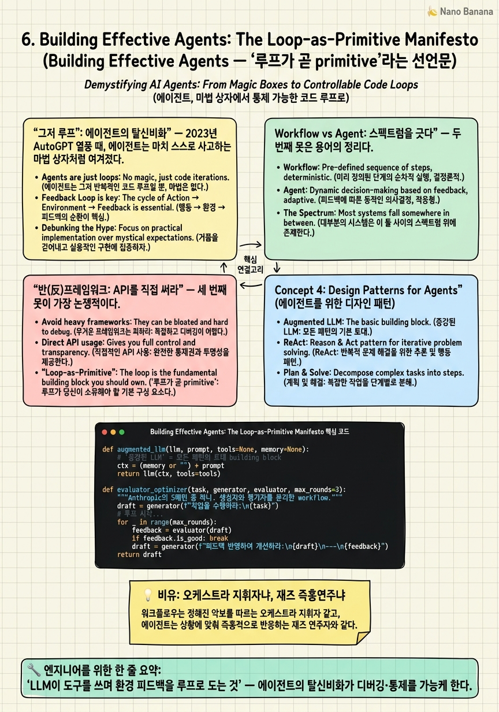

Building Effective Agents: The Loop-as-Primitive Manifesto

🎯 학습 목표
- Anthropic의 agent 정의와 workflow/agent 구분을 정확히 인용·설명한다
- '프레임워크보다 API 직접 사용'을 권하는 이유와 그 예외를 안다
- 다섯 가지 workflow 패턴(prompt chaining, routing, parallelization, orchestrator-workers, evaluator-optimizer)을 구분한다
- 이 글이 왜 framework→loop 피벗의 선언문으로 불리는지 설명한다
- 복잡성을 '이득이 증명될 때만' 추가하는 실무 원칙을 적용한다
2~5장에서 우리는 루프가 어떻게 풍부해지는지(행동·반성·기억·인지)를 봤다. 하지만 이 모든 걸 관통하는 하나의 선언이 2024년 말 Anthropic에서 나왔다. 바로 Building Effective Agents다. 이 글은 새 알고리즘을 제안하지 않는다. 대신 업계가 어렴풋이 느끼던 것을 명료한 언어로 못 박았다 — 그래서 loop engineering의 선언문이 됐다.
핵심 문장은 이것이다.
"Agents are typically just LLMs using tools based on environmental feedback in a loop."
'just(그저)'와 'loop(루프)'가 이 문장의 무게중심이다. 에이전트는 신비한 무언가가 아니라 그저 루프다. 이 한 문장이 AutoGPT식 거대 프레임워크의 시대를 닫고, '루프를 직접 잘 짜는' 시대를 열었다.
이 글의 두 번째 기여는 workflow와 agent를 명확히 가른 것, 세 번째는 '프레임워크 대신 API를 직접 쓰라'는 반(反)프레임워크 원칙이다. 이 장에서 우리는 앞 4개 장의 실험들이 왜 하나의 패러다임으로 수렴하는지, 그리고 그 패러다임이 프로덕션 설계에 주는 구체적 지침을 배운다. 여기가 코스의 정확한 중심축이다.
핵심 내용
'그저 루프': 에이전트의 탈신비화
2023년 AutoGPT 열풍 때, 에이전트는 마치 스스로 사고하는 마법 상자처럼 여겨졌다. 목표만 던지면 알아서 하위 목표를 쪼개고, 도구를 쓰고, 자기를 호출하며 무한히 일하는 — 그러나 실제로는 자주 헛돌고, 비싸고, 디버깅이 불가능한 상자였다.
Anthropic의 정의는 이 신비를 걷어낸다. 에이전트는 그저 'LLM이 도구를 쓰고, 환경 피드백을 받아, 루프를 도는' 것이다. 2장 ReAct의 while 루프, 그 이상도 이하도 아니다.
이 탈신비화가 왜 중요한가? 디버깅과 통제가 가능해지기 때문이다. 루프라면 나는 정확히 안다 — 언제 반복하고, 무엇을 컨텍스트에 넣고, 언제 멈추는지. 마법 상자는 열어볼 수 없지만, 내가 짠 루프는 매 줄을 들여다볼 수 있다.
그리고 이 정의는 앞 장들을 하나로 묶는다. Reflexion? 루프에 반성 단계를 넣은 것. Voyager? 루프에 skill 메모리를 붙인 것. Generative Agents? 루프에 인지 서브시스템을 단 것. 전부 '루프 + α'다. 루프가 만물의 기본 단위(primitive)라는 것 — 이것이 이 글의 첫 번째 못이다.
Workflow vs Agent: 스펙트럼을 긋다
두 번째 못은 용어의 정리다. 사람들이 '에이전트'라 뭉뚱그려 부르던 것을 Anthropic은 둘로 가른다.
"Workflows are systems where LLMs and tools are orchestrated through predefined code paths. Agents, on the other hand, are systems where LLMs dynamically direct their own processes and tool usage."
| 축 | Workflow | Agent |
|---|---|---|
| 흐름 통제 | 개발자의 코드 | LLM의 실시간 판단 |
| 예측 가능성 | 높음 | 낮음 |
| 디버깅 | 쉬움 | 어려움 |
| 적합 상황 | 단계가 알려진 반복 작업 | 단계를 미리 알 수 없는 개방형 작업 |
핵심 실무 지침은 '대부분의 경우 workflow로 충분하다' 는 것이다. 진짜 자율 agent가 필요한 경우는 생각보다 드물다. 개방형이고, 단계 수를 예측할 수 없고, LLM의 판단에 흐름을 맡겨야만 하는 문제 — 그럴 때만 agent를 쓴다. 나머지는 예측 가능하고 디버깅 쉬운 workflow가 낫다.
이 구분이 8~10장의 그래프 엔지니어링을 예고한다. 그래프는 결국 이 스펙트럼을 한 시스템 안에 섞는 도구다 — 큰 뼈대는 workflow(고정 엣지)로, 특정 노드만 agent(자율 루프)로. Anthropic이 그은 이 선이 없었다면, 그래프 오케스트레이션이 무엇을 조율하는지조차 말할 수 없었을 것이다.
반(反)프레임워크: API를 직접 써라
세 번째 못이 가장 논쟁적이다. Anthropic은 무거운 에이전트 프레임워크를 기본값으로 삼지 말라고 권한다.
"We suggest that developers start by using LLM APIs directly: many patterns can be implemented in a few lines of code ... consider adding complexity only when it demonstrably improves outcomes."
이유는 명확하다. 프레임워크는 "extra layers of abstraction that can obscure the underlying prompts" — 밑바닥 프롬프트와 루프를 두꺼운 추상화로 가려, 무엇이 실제로 벌어지는지 알 수 없게 만든다. 1장 밀키트 비유가 그대로다.
여기서 중요한 뉘앙스: 이건 '프레임워크를 절대 쓰지 마라'가 아니다. 프레임워크를 쓰더라도 그 밑에서 무슨 일이 일어나는지 이해하고, 복잡성은 이득이 증명될 때만 더하라는 것이다. 기본값을 '프레임워크 먼저'에서 'API 직접 먼저'로 뒤집는 것이 요지다.
글은 또 유용한 building block과 다섯 workflow 패턴을 제시한다. 토대는 augmented LLM(검색·도구·메모리로 증강된 LLM)이고, 그 위에 ① prompt chaining ② routing ③ parallelization ④ orchestrator-workers ⑤ evaluator-optimizer의 다섯 조합 패턴이 있다. 이들은 대부분 몇십 줄 코드로 짤 수 있는 것들이다 — 거대 프레임워크 없이. 이 다섯 패턴이 8~10장 그래프 구조의 원형 어휘가 된다.
💡 비유로 이해하기
음악에는 두 가지 연주 방식이 있다. 오케스트라는 악보(predefined code path)가 모든 걸 정한다. 언제 바이올린이 들어오고 언제 팀파니가 울리는지 미리 다 적혀 있다. 지휘자는 그 악보를 정확히 실현한다. 예측 가능하고, 매번 거의 같고, 어디가 틀렸는지 악보와 대조하면 안다. 이것이 workflow다.
재즈 즉흥연주(jam) 는 다르다. 코드 진행이라는 느슨한 뼈대만 있고, 그 위에서 연주자가 실시간으로 무엇을 칠지 스스로 정한다. 예측 불가능하고, 매번 다르고, 짜릿하지만 통제하기 어렵다. 이것이 agent다.
Anthropic의 메시지는 이렇다 — 대부분의 곡은 오케스트라로 연주하는 게 낫다. 재즈 즉흥이 필요한 순간은 정말 개방적이고 예측 불가능한 무대뿐이다. 그리고 재즈를 하겠다고 값비싼 '전자동 재즈 머신(프레임워크)'을 살 필요도 없다 — 좋은 연주자(직접 짠 루프)와 기본 악기(API)면 된다. 머신은 무슨 소리를 내는지 감춰버려서, 정작 연주가 이상할 때 고칠 수가 없다. 진짜 실력은 악보와 즉흥 사이에서 '이 곡엔 어느 쪽이 맞는가'를 고르는 판단 — 그게 8장부터 배울 그래프 엔지니어링이다.
💻 코드 예시
Anthropic이 말한 '프레임워크 없이 몇 줄로'를 실증해보자. 다섯 패턴 중 가장 강력한 evaluator-optimizer를 순수 파이썬으로 구현한다. 프레임워크 임포트가 단 하나도 없다는 점, 그리고 이게 사실상 3장 Self-Refine을 workflow로 정형화한 것임에 주목하라 — 개념들이 어떻게 재조합되는지 보인다.
def augmented_llm(llm, prompt, tools=None, memory=None):
# '증강된 LLM' = 모든 패턴의 토대 building block
ctx = (memory or "") + prompt
return llm(ctx, tools=tools)
def evaluator_optimizer(task, generator, evaluator, max_rounds=3):
"""Anthropic의 5패턴 중 하나. 생성자와 평가자를 분리한 workflow."""
draft = generator(f"작업을 수행하라:\n{task}")
for _ in range(max_rounds):
verdict = evaluator( # 평가자 = 별도 역할(별도 프롬프트/모델)
f"작업:\n{task}\n\n산출물:\n{draft}\n\n"
"PASS 또는 구체적 개선 지시를 출력하라.")
if verdict.strip().startswith("PASS"): # 예측 가능한 정지 조건
return draft
draft = generator( # 피드백을 반영해 재생성
f"작업:\n{task}\n\n이전:\n{draft}\n\n개선 지시:\n{verdict}")
return draft
# workflow: 흐름(생성→평가→분기)이 '코드'로 고정 = 예측 가능·디버깅 쉬움
# 만약 generator가 스스로 도구·다음 단계를 정하게 하면 → 그 지점이 agent가 됨
이 예제의 교훈 셋. (1) 프레임워크 제로 — LangChain도 뭣도 없이, 강력한 에이전트 패턴이 30줄로 끝난다. Anthropic의 'API를 직접 써라'가 과장이 아님을 보여준다. (2) workflow의 정체 — 흐름(생성→평가→분기→정지)이 전부 파이썬 for/if로 코드에 고정돼 있다. 그래서 예측 가능하고 디버깅이 쉽다. 이것이 agent(LLM이 흐름을 정함)와의 결정적 차이다. (3) 역할 분리 — generator와 evaluator를 다른 함수(다른 프롬프트/모델)로 나눈 게 self-bias(3장)를 완화한다. 이 evaluator-optimizer는 사실상 Self-Refine을 'workflow로 승격'한 것 — 앞 장들의 아이디어가 Anthropic의 어휘로 재정리되는 순간이다. 이 다섯 패턴의 흐름을 노드-엣지로 그리면 그대로 8~10장의 그래프가 된다.
🏭 현업에서의 평가
✅ 시니어가 보는 것
- 설계 첫머리에 workflow/agent를 판별하고, 기본값을 workflow로 두는 규율
- '에이전트 = 루프'라는 탈신비화된 관점으로 시스템을 분해
- 프레임워크를 기본값으로 삼지 않고, 필요성이 증명될 때만 도입하는 절제
- 다섯 workflow 패턴을 상황에 맞게 고르고 조합하는 능력
⚠️ 레드 플래그
- 모든 문제를 자율 agent로 풀려 하고 workflow를 고려하지 않음
- '무조건 LangChain/프레임워크부터'라는 반사적 선택
- 복잡성을 이득 증명 없이 선제적으로 쌓음(over-engineering)
- workflow와 agent를 구분 못 하고 '에이전트'로 뭉뚱그림
🎤 예상 인터뷰 질문
- 주어진 문제를 workflow로 짤지 agent로 짤지 어떤 기준으로 결정하고, 그 근거는?
- Anthropic이 무거운 프레임워크 대신 API 직접 사용을 권하는 이유와, 그럼에도 프레임워크가 정당한 경우는?
- evaluator-optimizer 같은 workflow 패턴은 Self-Refine 같은 논문 기법과 무엇이 같고 다른가?
✨ 핵심 요약
에이전트 = 그저 루프
'LLM이 도구를 쓰며 환경 피드백을 루프로 도는 것' — 에이전트의 탈신비화가 디버깅·통제를 가능케 한다.
workflow vs agent
흐름을 코드가 정하면 workflow, LLM이 실시간에 정하면 agent. 대부분은 workflow로 충분하다.
반프레임워크 원칙
기본값은 'API 직접 사용'. 복잡성은 이득이 증명될 때만 더한다.
추상화가 프롬프트를 가린다
무거운 프레임워크는 밑바닥 프롬프트·루프를 감춰 디버깅을 불가능하게 만든다.
다섯 패턴
prompt chaining·routing·parallelization·orchestrator-workers·evaluator-optimizer — 그래프의 원형 어휘.
앞 장들을 묶는 렌즈
Reflexion·Voyager·Generative Agents가 전부 '루프 + α'로 통일된다.
그래프의 전제
workflow/agent 스펙트럼을 그었기에, 8~10장 그래프가 '무엇을 섞는지'를 말할 수 있게 됐다.